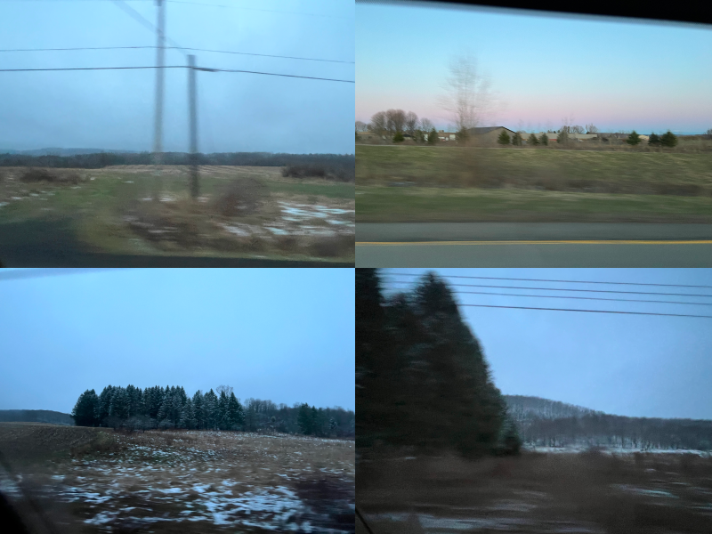
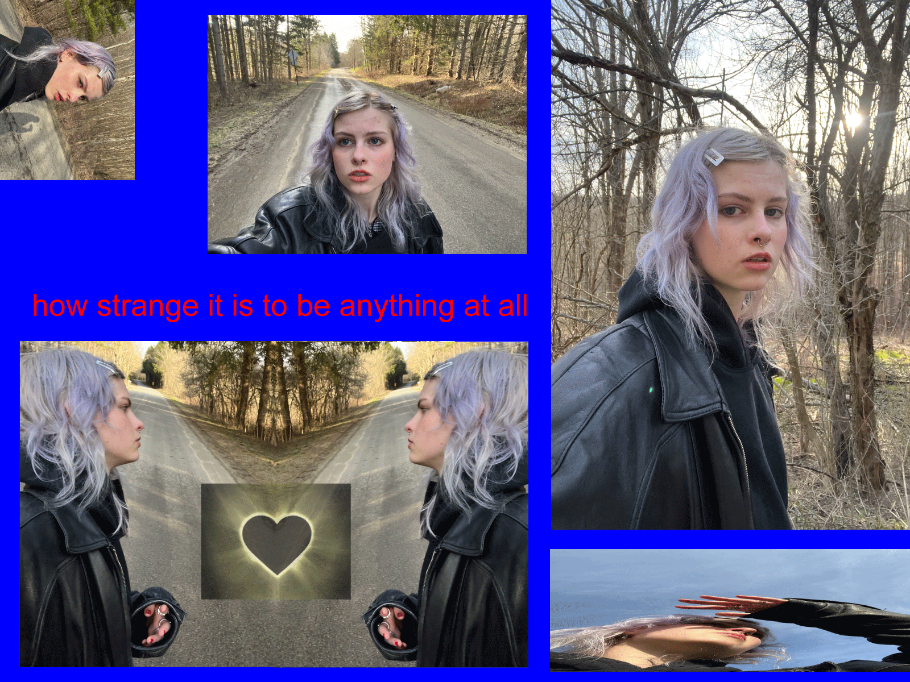

Hello everyone. This is my first blog post. I had some free time this trip and a lot of media I wanted to curate. Inspiration hath returned! In the form of HTML blogging.


i really like bottom right^

Double Rainbow! So beautiful

This was at the base of the waterfall. I had a magical moment here where I felt like I was in a fairytale. The fact that this just happens? how special that i get to see it !

This one i named plain jane.

winnie next to the cow barn. the bulls (numerous) started mooing and it sounded like death was upon us.

Everyone had so many items and machinery in their yard.

Busted Shack

The goo machine
If you ever find yourself in Ellicottville, NY, you have GOT to go to “Next Leaf Pharma” and they will hook you up. We got a bag of edibles and two prerolls and they gave us Three Free Joints and a free lighter all for $15. They did not ID any of us and all the tubes did not have labels on them.

so we actually couldn't see it bc it was too cloudy. But it did get very dark and cold in the middle of the day which was very cool. didn't even get to use my shades #smh im so #bummed. then i got home and i

saw this blue barn. it looks so blue and cute.

found this piano? it does not still work.
I rate this walk a 7/10. I set off in hopes to find a creature, like horse or a deer but i saw no four legged
friends. I did however, have a great time. It was nice to be alone, i felt as if i was completely alone and could
do anything and no one would know. I walked funny and took selfies and pranced and recorded videos. The temperature
was nice, the sun felt nice and the wind was cooling. i think walking around in a new place is one of life's greatest
gifts.